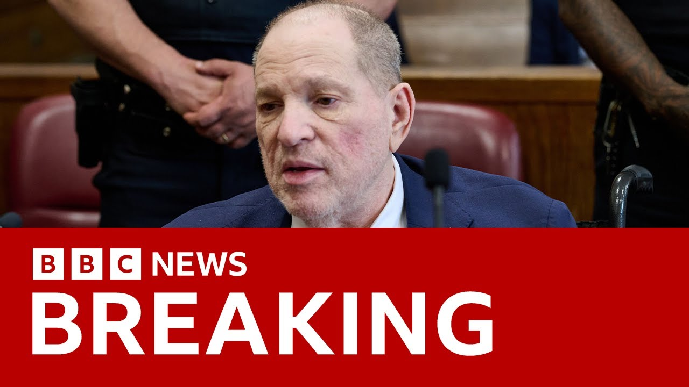

【哈维·韦恩斯坦在纽约重审后被判性侵罪名成立 | BBC新闻】
Summary: Harvey Weinstein has been found guilty of one sex crime charge but not guilty on another, with no verdict yet on the rape charge. The jury deliberated for five days amid tension, including complaints about juror tactics. Weinstein was convicted of a criminal sexual act involving Mimi Haley, a production assistant, but acquitted regarding a Polish model. Deliberations continue on Jessica Man's rape accusation.
摘要： 哈维·韦恩斯坦被判定一项性犯罪罪名成立，另一项无罪，强奸指控尚未裁决。陪审团在紧张气氛中审议五天，包括对陪审员策略的投诉。韦恩斯坦因涉及制片助理咪咪·哈雷的刑事性行为被判有罪，但对一名波兰模特的相关指控无罪。针对杰西卡·曼的强奸指控仍在审议中。

⏱️ Estimated Reading Time: 4 min
📚 六级生词 📚 雅思生词 📚 托福生词 📚 SAT生词 📚 考研生词 📚 GRE生词 📚 高考生词 📚 视频里的生词
Want to get more now from the US.
现在想从美国获取更多信息。
That breaking news, Harvey Weinstein has been found guilty of one sex crime charge, not guilty on another, and no verdict on the rape charge.
突发新闻，哈维·韦恩斯坦被判定一项性犯罪罪名成立，另一项无罪，强奸指控尚未裁决。
Let's try and get a bit of clarity about what's going on.
让我们试着理清发生了什么。
We can speak to our North America correspondent, Neta Talig.
我们可以连线北美记者内塔·塔利格。
Hi Neta, just talk us through what's happened in court.
你好内塔，请为我们梳理法庭上的情况。
Yeah.
好的。
Well, remember this is the second trial of Harvey Weinstein uh in New York after the first one was overturned by a court of appeals that found that prosecutors had unfairly allowed women that weren't officially part of the charges to testify.
这是哈维·韦恩斯坦在纽约的第二次审判，第一次审判因上诉法院认定检方不当允许非正式指控的女性作证而被推翻。
So on the second goound, there was of course intense interest uh in how uh the jury would look at the evidence uh from two women uh two of the same women who testified in the first trial, but also a new third accuser uh in this uh second case.
因此在第二次审判中，陪审团如何看待两名首次审判中作证的女性以及本案中新增的第三名指控者的证据自然备受关注。
Uh nevertheless though, we have seen the jury deliberating over five days and during those five days uh there has been a lot of tension.
然而，陪审团审议了五天，期间气氛十分紧张。
Uh, in fact, there have been reports that the four person on the jury actually complained to the judge uh about some of the tactics being used by other jurors to try to change the minds of others, bringing in some evidence, for example, that wasn't part of the case.
事实上，有报道称一名陪审员向法官投诉其他陪审员试图通过引入非本案证据等方式改变他人立场。
And uh Weinstein's attorneys actually tried to move for a mistrial, but the judge just reminded jurors that they had to look solely at the evidence in this case.
韦恩斯坦的律师曾试图推动无效审判，但法官提醒陪审员只能考虑本案证据。
So after five days, uh we now have a decision where the jury has found Harvey Weinstein guilty of a criminal sexual act uh with one of the women, Mimi Haley.
五天后，陪审团判定哈维·韦恩斯坦对女性咪咪·哈雷的刑事性行为罪名成立。
Now, she was a production assistant uh that worked with Weinstein, and she has accused him of uh forcibly performing oral sex on her.
哈雷曾是韦恩斯坦的制片助理，指控他强迫其进行口交。
So they have found uh Weinstein guilty on that charge.
因此陪审团判定韦恩斯坦该项罪名成立。
They have found Weinstein um not guilty on the third new accuser, a Polish model who said that she was hoping that Weinstein would help her with his career, with her career, but then also a forced oral sex on her.
但对第三名新指控者——一名称希望韦恩斯坦帮助其事业却遭强迫口交的波兰模特——陪审团判定韦恩斯坦无罪。
Now, there is a third woman who was part of the original case, Jessica Man.
本案原始指控者之一的杰西卡·曼。
She actually had um a long consensual relationship with Weinstein, but accused him of rape.
她与韦恩斯坦曾长期保持自愿关系，但指控其强奸。
Now, the jury is going to return tomorrow to continue deliberating on that count.
陪审团将于明日继续审议该项指控。
But look, uh we are years from the Me Too movement.
但距离"Me Too"运动已过去多年。
Harvey Weinstein, of course, was kind of the poster uh man for that movement because of how many women in Hollywood had come out and spoken out against him.
哈维·韦恩斯坦堪称该运动的标志性人物，因众多好莱坞女性公开指控他。
And so, his initial uh trial where he was found guilty was really seen as a victory for that movement.
因此他首次审判被定罪被视为该运动的胜利。
Years on, many were waiting to see what the result would be this time around.
多年后，许多人关注本次审判结果。
So, a a partial victory for one of the women um who the jury heard her case and and believed her.
对其中一名女性而言是部分胜利，因陪审团听取并采信了她的指控。
Um but more to come as we wait to see what the jury has to say uh about the rest of the case.
但陪审团对其他指控的裁决仍有待公布。